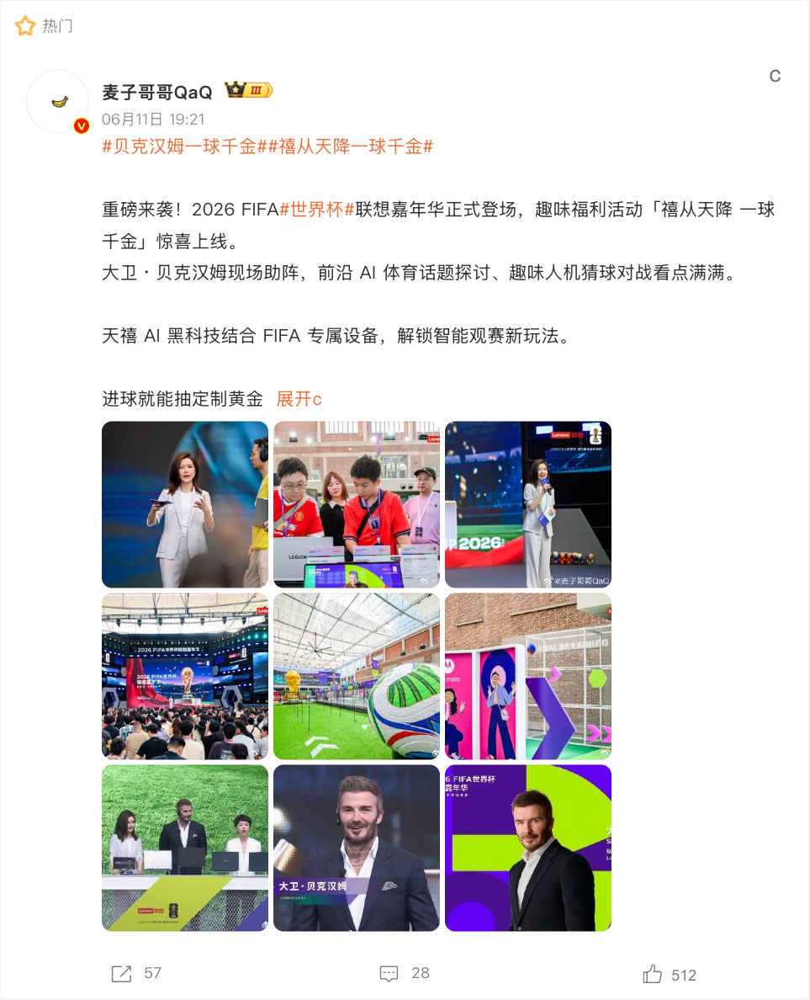

在本届世界杯里的动作CASE 001联想：Football AI Pro将赛事数据、战术分析与企业 AI 能力相连已核验 / 已归档CASE 002联想：AI 球迷互动技术从后台能力转为球迷可体验内容已核验 / 已归档CASE 080联想 x 麦当劳：薯标鼠标用可收藏的联名物把技术合作变成手感体验已核验 / 已归档品牌页资料状态本页将品牌行动拆为独立案例，而不是简单罗列赞助头衔。每一案例的物料、来源和待核点详见对应内容页。对多品牌共创案例，各参与品牌页均保留入口。已归档视觉素材CASE 001 · 联想：Football AI ProCASE 002 · 联想：AI 球迷互动